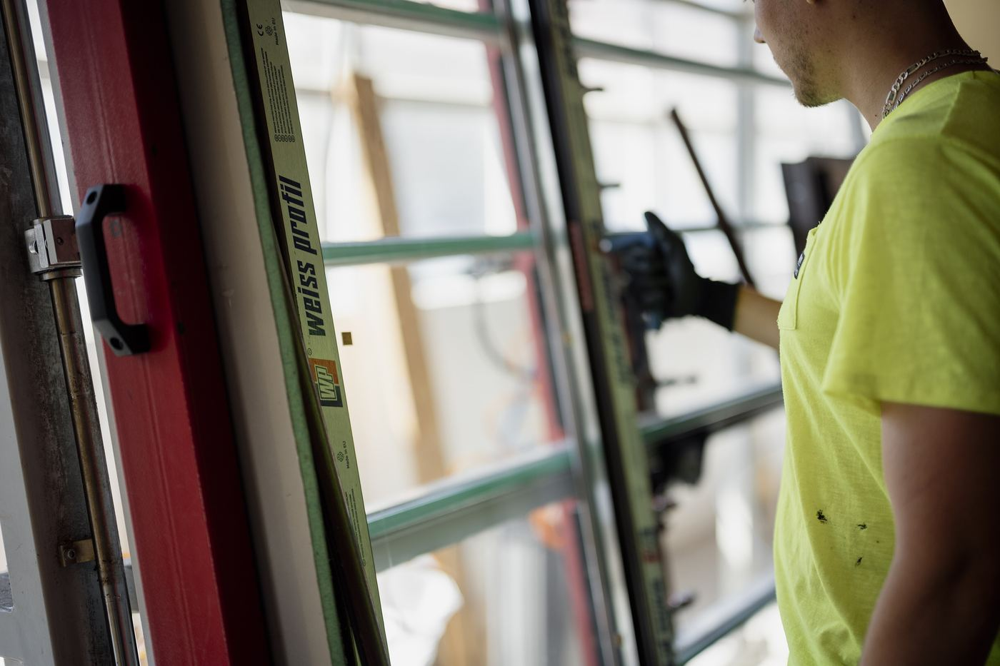
Fenstertausch
Fenstertausch & Montage
Ausbau, Entsorgung und Einbau an einem Tag — sauber, staubarm und nach RAL-Richtlinie abgedichtet.
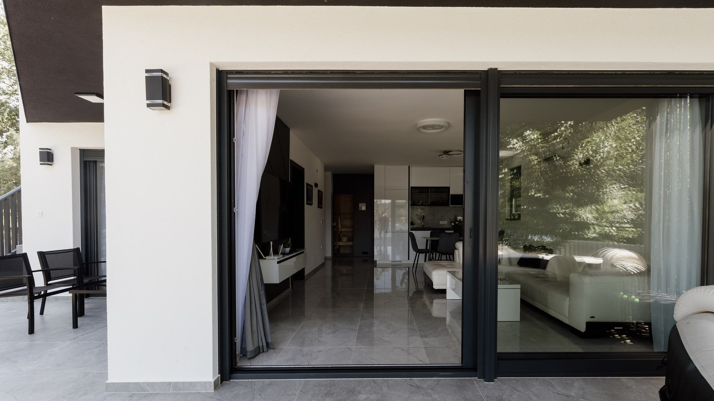
Neue Fenster, Hebe-Schiebetüren und Sonnenschutz — maßgefertigt, in einem Tag montiert und mit bis zu 70 % weniger Wärmeverlust als alte Fenster.
Vom einzelnen Badfenster bis zur kompletten Sanierung: Wir beraten, messen, fertigen und montieren — mit eigenem Team und einem festen Ansprechpartner.

Ausbau, Entsorgung und Einbau an einem Tag — sauber, staubarm und nach RAL-Richtlinie abgedichtet.
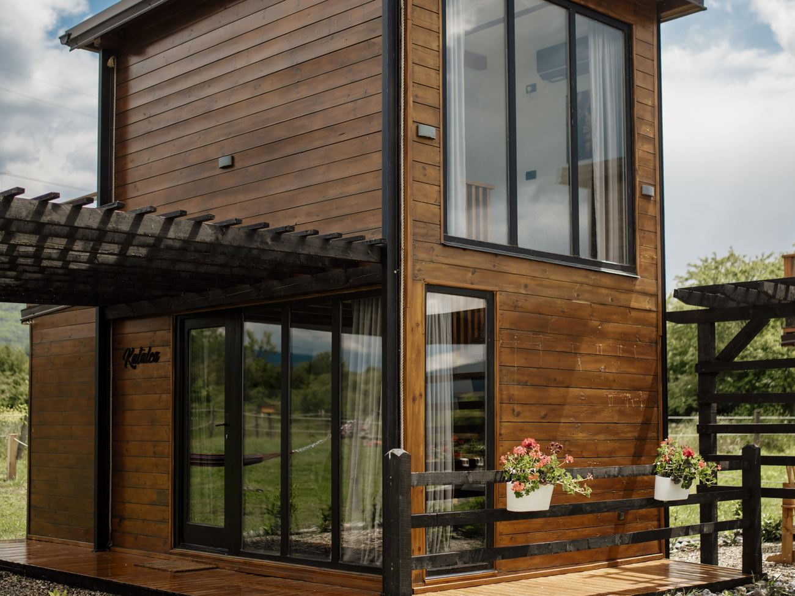
Warme Optik innen, wetterfeste Aluschale außen.
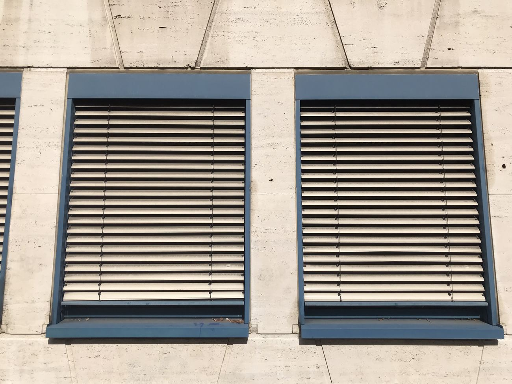
Motorisiert, per App oder Wetterstation gesteuert.
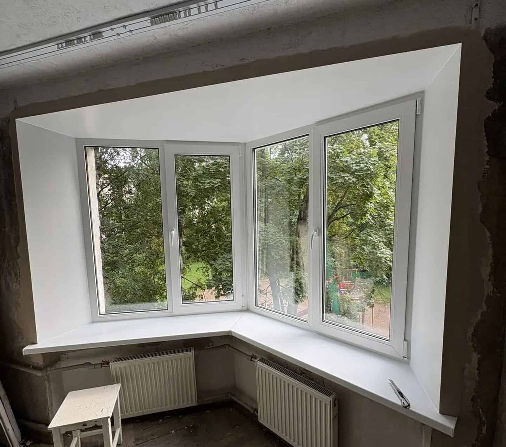
Maßanfertigung für jede Öffnung.
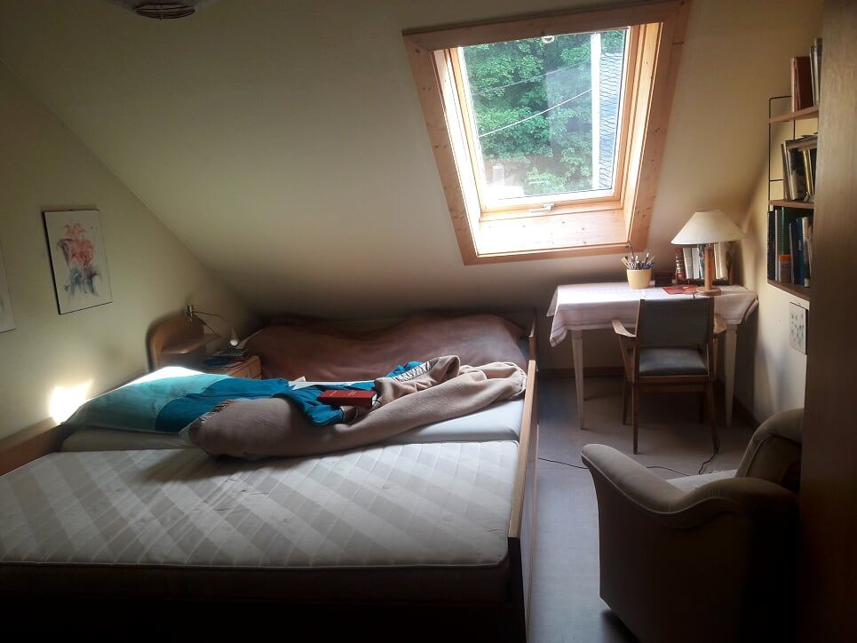
Tausch oder Neueinbau inklusive Eindeckrahmen.
Sicher, gedämmt und mit Fingerprint auf Wunsch.
Spannrahmen, Plissee und Schiebeanlagen nach Maß.
RC2-Beschläge, Sicherheitsglas und abschließbare Griffe.
Beschläge einstellen, Dichtungen tauschen, Reparaturen.
Typ, Material, Farbe, Glas und Maße wählen — die Zeichnung passt sich live an. Dazu Richtpreis, Dämmwert und Lieferzeit.
Richtwerte für Standardausführung. Den Festpreis erhältst du nach dem kostenlosen Aufmaß vor Ort.
Alte Fenster sind oft das größte Leck im Haus. Wähle Alter, Fensterfläche und Heizung — und sieh, wie viel du jedes Jahr sparst.
Vereinfachte Schätzung mit 82.000 Heizgradstunden, ohne Preissteigerung. Förderungen für den Fenstertausch sind zusätzlich möglich — wir helfen beim Antrag.
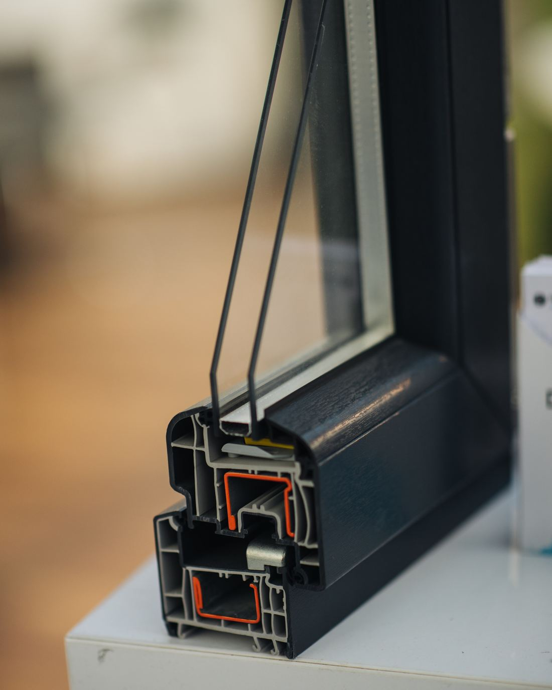
Tippe auf die Punkte im Querschnitt. Jedes Detail entscheidet über Dämmung, Dichtheit und Lebensdauer.
Neubau, Sanierung oder Sonnenschutz — eine Auswahl aus dem letzten Jahr.
Holz-Alu, Lärche / Anthrazit
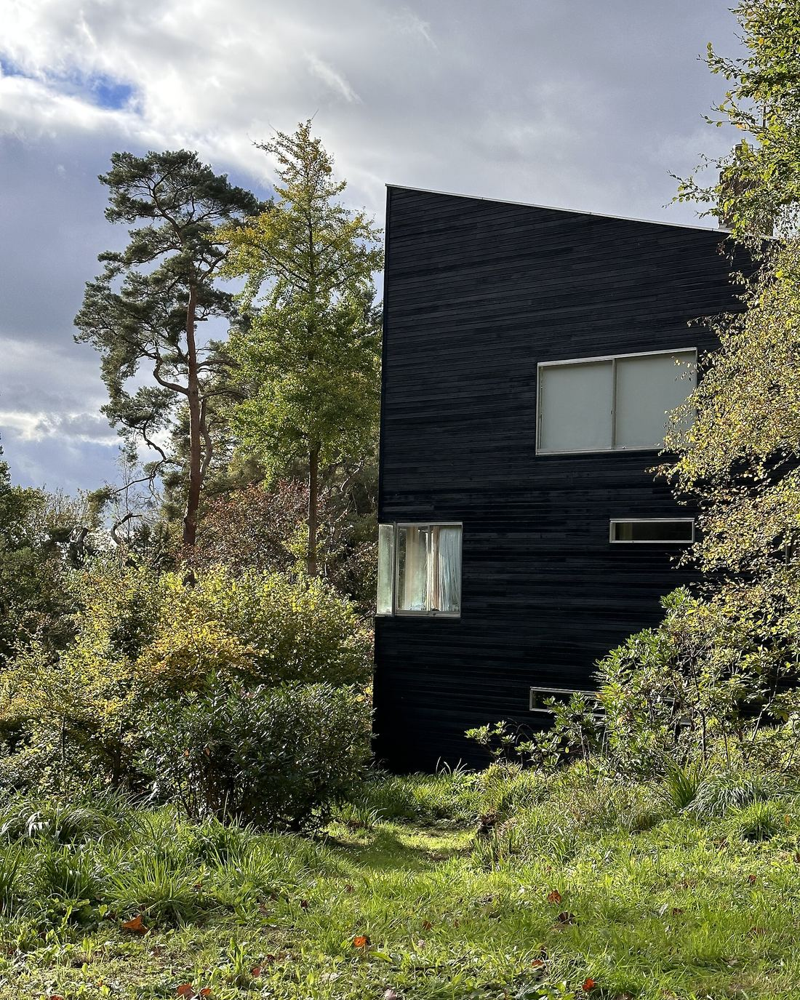
NeubauAluminium schwarz, Fixverglasung
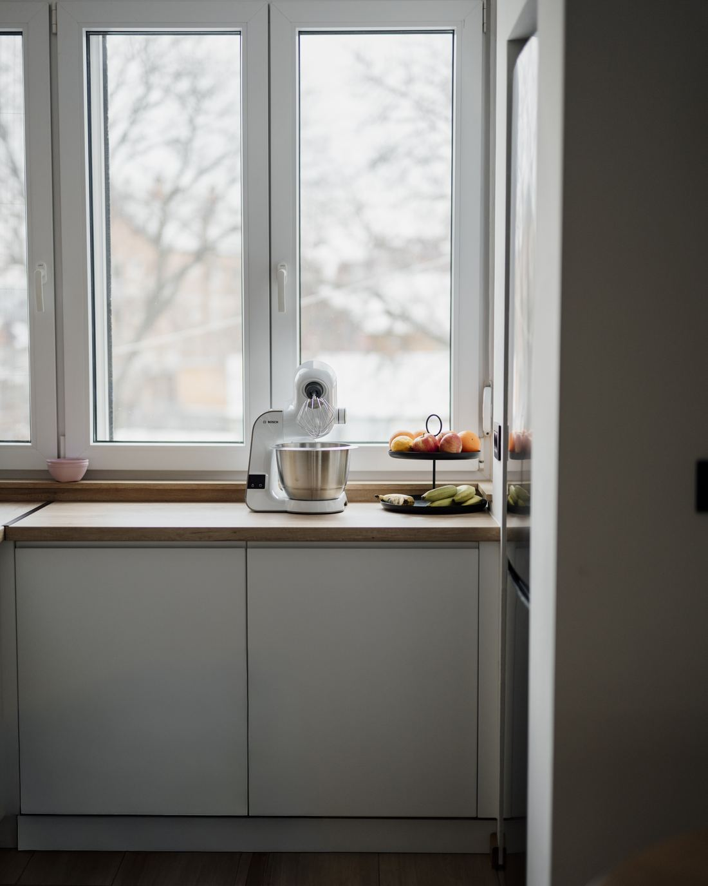
SanierungKunststoff weiß, Schallschutzglas
Kunststoff, 3-fach Verglasung
Raffstore mit Wetterstation
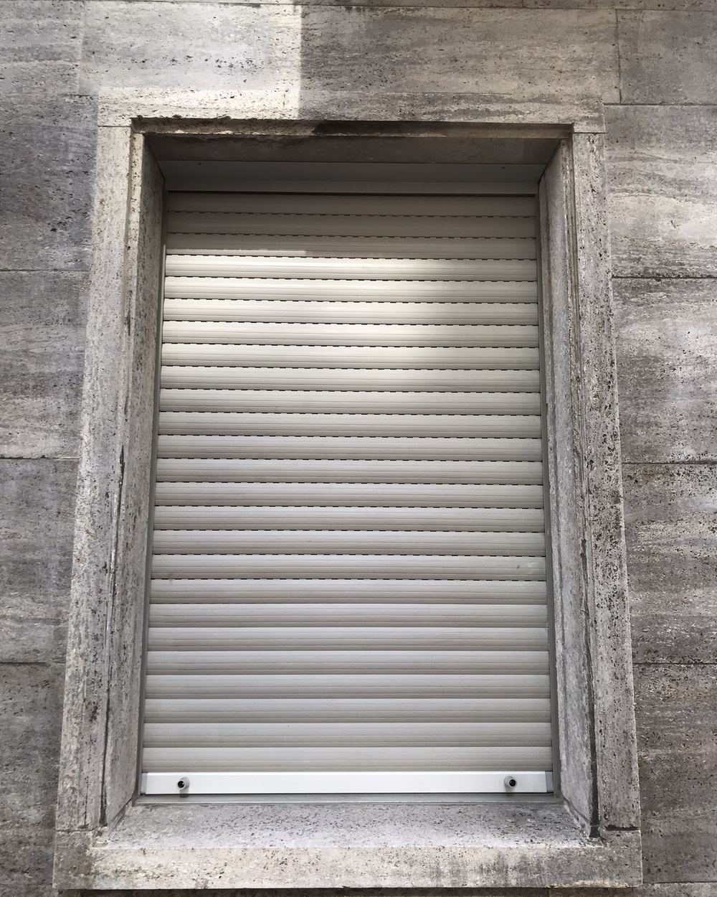
SonnenschutzNachrüstung mit Funkmotor
Dachfenster-Tausch mit Innenfutter
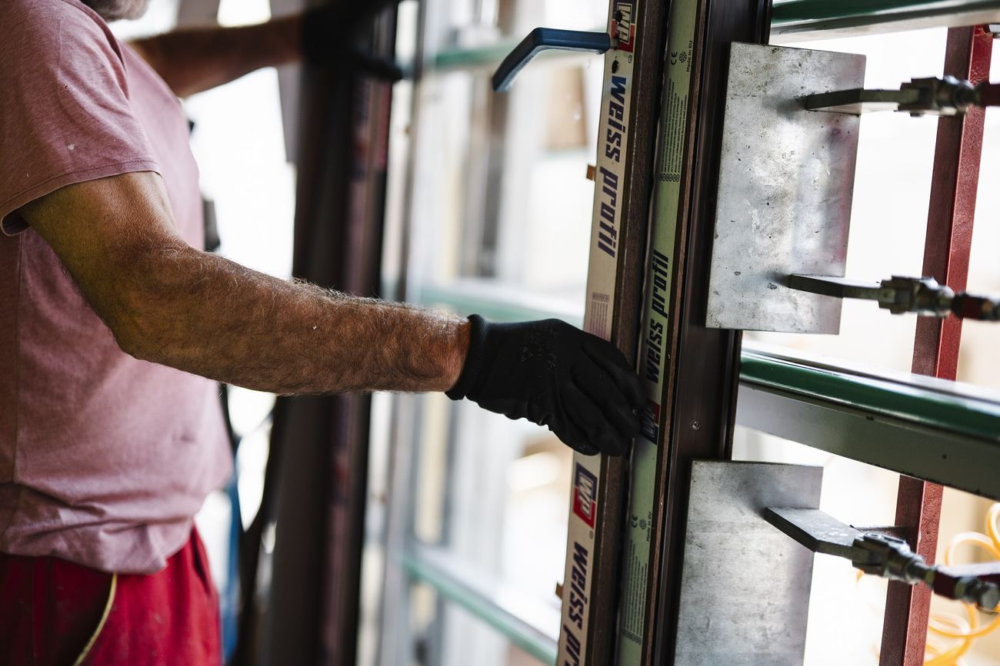
SanierungKomplettsanierung, bewohnt
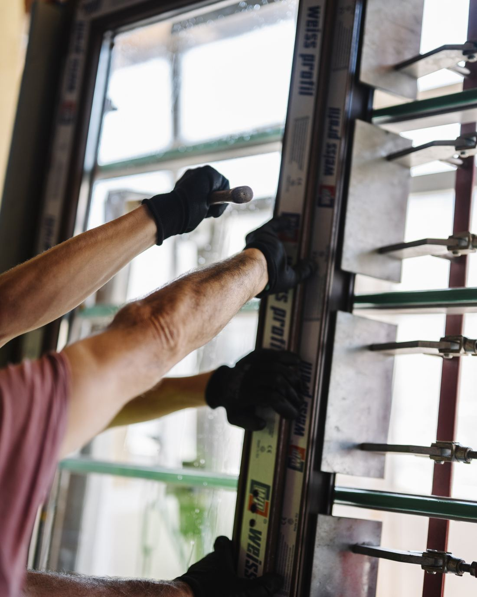
Telefonisch oder in unserem Schauraum — mit Mustern zum Anfassen.
kostenlosWir messen jede Öffnung exakt und prüfen Laibung, Fensterbank und Anschlüsse.
ca. 1 Std.Festpreis in 3 Werktagen. Nach deiner Freigabe fertigen wir auf den Millimeter.
5–10 WochenAlte Fenster raus, neue rein, dreistufig abgedichtet. Wir decken ab und räumen auf.
meist 1 TagGemeinsame Kontrolle, Einweisung und 5 Jahre Gewährleistung auf die Montage.
5 Jahre4,9 von 5 Sternen aus über 500 Bewertungen.
Elf Fenster an einem Tag getauscht, und am Abend war alles sauber. Seit dem Winter merken wir den Unterschied bei der Heizung deutlich.
Unsere Wohnung liegt an einer Hauptstraße. Mit dem Schallschutzglas ist es jetzt so ruhig, dass wir bei offenem Vorhang schlafen.
Hebe-Schiebetür mit 4 Metern und Raffstores — perfekt geplant, pünktlich geliefert und super eingebaut. Klare Empfehlung.
Noch etwas offen? Ruf uns an — wir beraten dich ehrlich und unverbindlich.
Bei Fenstern, die älter als 25 bis 30 Jahre sind, fast immer. Typische Zeichen: Zugluft, beschlagene Scheiben, kalte Raumecken oder schwergängige Beschläge.
Nein. Wir decken Böden und Möbel ab, arbeiten staubarm und nehmen alte Fenster und Verpackung mit. Putzarbeiten an der Laibung sind meist nicht nötig.
Kunststoff ist günstig und pflegeleicht, Holz wohnlich und nachhaltig, Holz-Alu verbindet beides, und Aluminium ermöglicht schlanke Profile und große Glasflächen. Wir zeigen dir alle Varianten im Schauraum.
Ja, für den Fenstertausch gibt es je nach Bundesland und Programm Förderungen. Wir sagen dir, welche infrage kommen, und bereiten die Unterlagen vor.
Kunststofffenster ca. 5–6 Wochen, Holz und Holz-Alu 8–10 Wochen nach Freigabe. Die Montage selbst dauert pro Wohnung meist nur einen Tag.
Erzähl uns kurz von deinem Projekt — wir melden uns innerhalb von 24 Stunden für einen Termin.